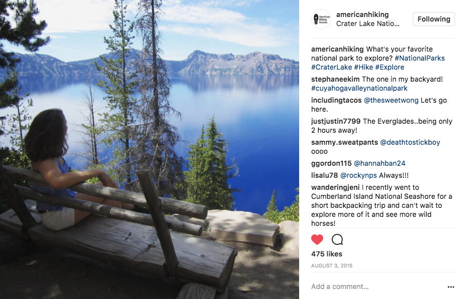
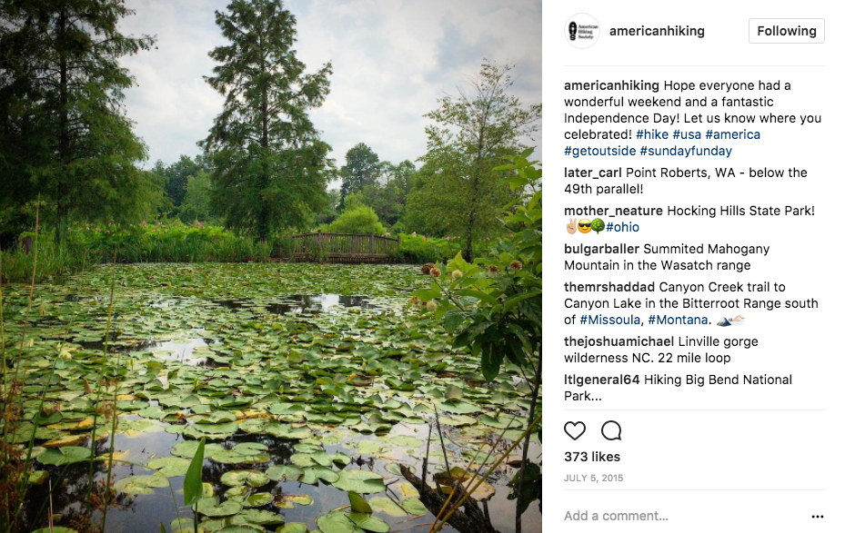
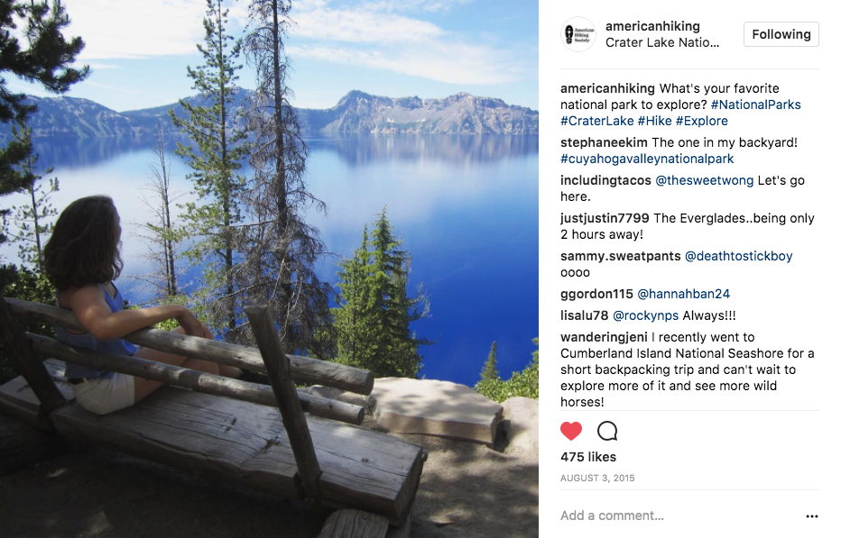
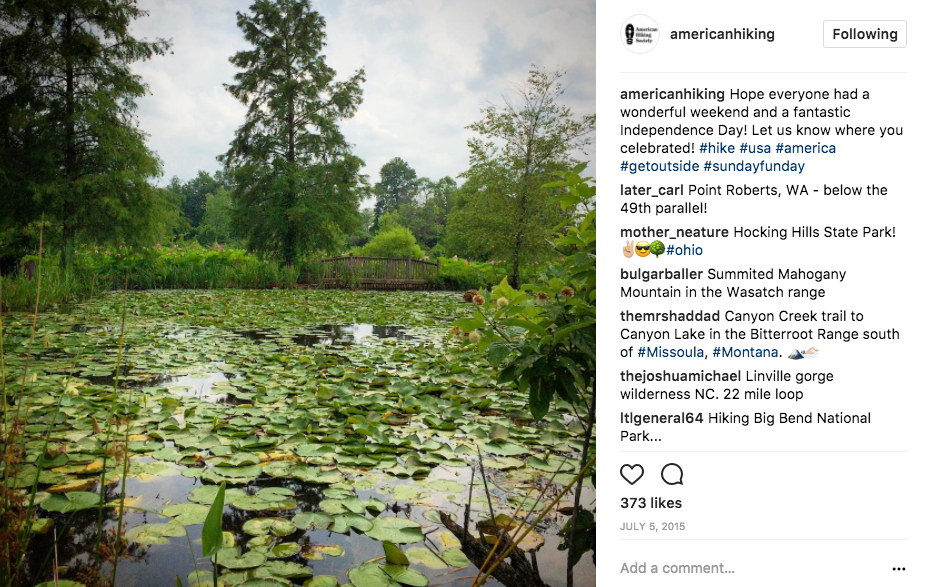
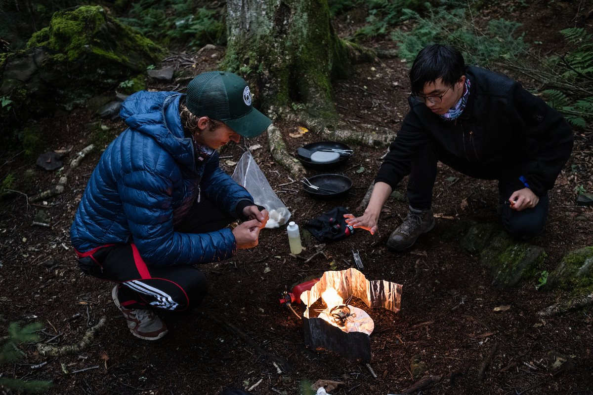
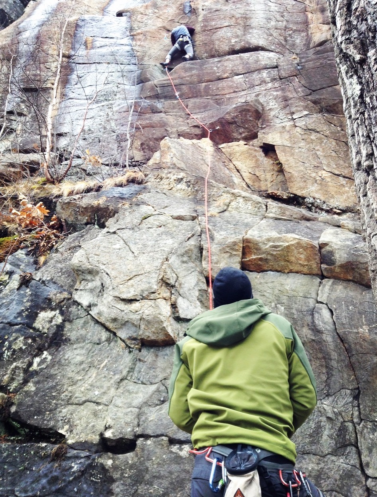
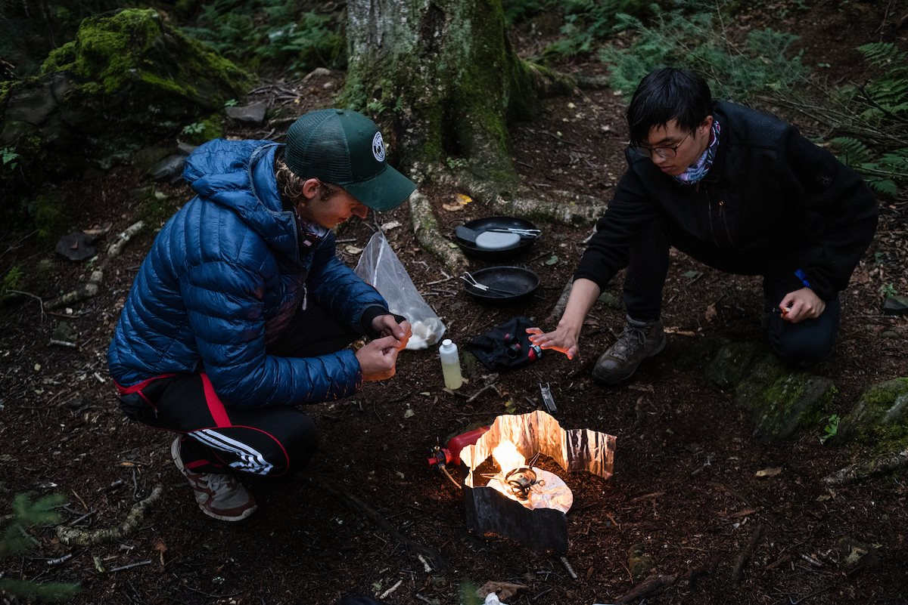
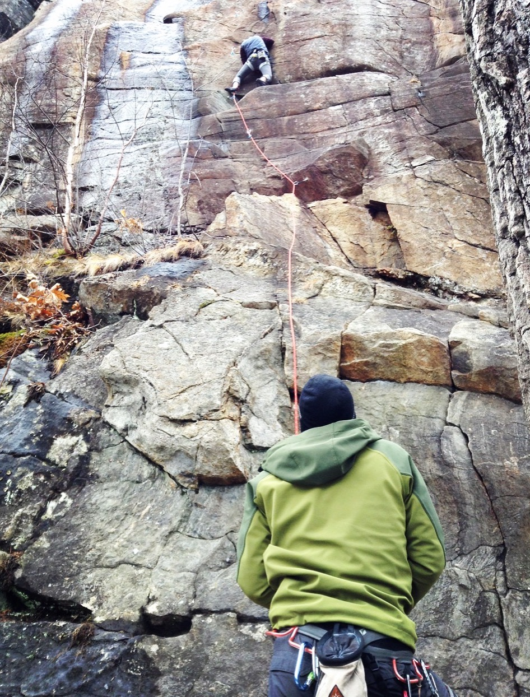

Instagram Management
As an intern, I managed the American Hiking Society Instagram account during the summer of 2015. I developed custom posts and graphic content and shared member-contributed content as well.

 



Twitter Content
I also contributed to the American Hiking Society Twitter Account. I shared media from other sites to increase reach, and promoted AHS contests and events to develop the organization's awareness.


Independent Study Project
During the spring 2016 semester, I studied abroad in Nepal. As an end of semester project, I was given a month to conduct and independent study project on a topic of my choice. I decided to spend several weeks hiking through rural Nepal to study the effects of recent road and trail development in the region. I interviewed locals, tourists, and government officials to analyze the cultural and economic effects that these developments were having.
Upon finishing my trek through the Himalayas, I returned to Kathmandu to compile what I had learned. Completing the project involved extensive research into online resources from the Nepali government as well as tourism sites. I was able to incorporate my photography into the project as well to help the reader visualize what I was describing, and increase the asthetic appeal of the project.
The final result of the month was a 40 page paper and a presentation on my findings to a an audience that included Nepali scholars, government officials, and foreign nationals from accross the globe. By clicking here or on the cover page to the left, you can access the full text of my work.
Outdoor Leadership
I have extensive experience leading outdoor trips. As a summer job, I have worked as a trip leader for Overland Summers. During this time, I worked closely with a co-leader to take groups of 12 students on outdoor adventures. Being a leader meant teaching outdoor and safety skills, keeping track of budgets, encouraging inclusivity, managing group dynamics, and ensuring the safety of everyone in an inherently risky environment.
I also organized and led trips near Tufts during the school year. Through Tufts Mountain Club, I led hiking trips for younger students, where I was in charge of route planning, medical preparedness, and decision-making. I also taught courses to help other students become safe and confident rock climbers. As a senior, I led a trip for Tufts Wilderness Orientation, where I brought 8 incoming first-year students on a pre-orientation trip to prepare for college. This year, I returned after graduation to lead a training trip where I could pass on my knowledge and skills to new leaders.
 


